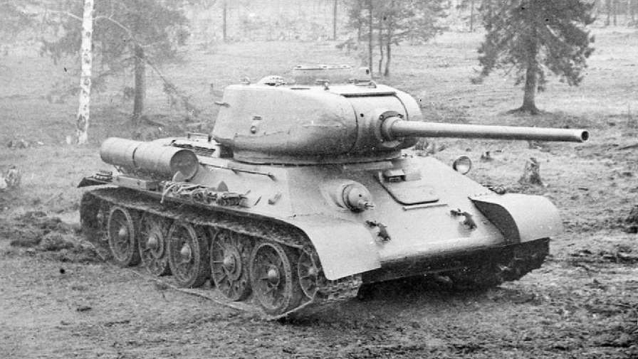

Der bahnbrechende sowjetische mittlere Panzer.
Die Weiterentwicklung mit einer mächtigen 85-mm-Kanone.
Ein extrem schwer gepanzerter Durchbruchspanzer.
Entwickelt, um schwere Panzer auf große Distanz zu vernichten.
Ein hocheffektiver Jagdpanzer auf dem Chassis des T-34.